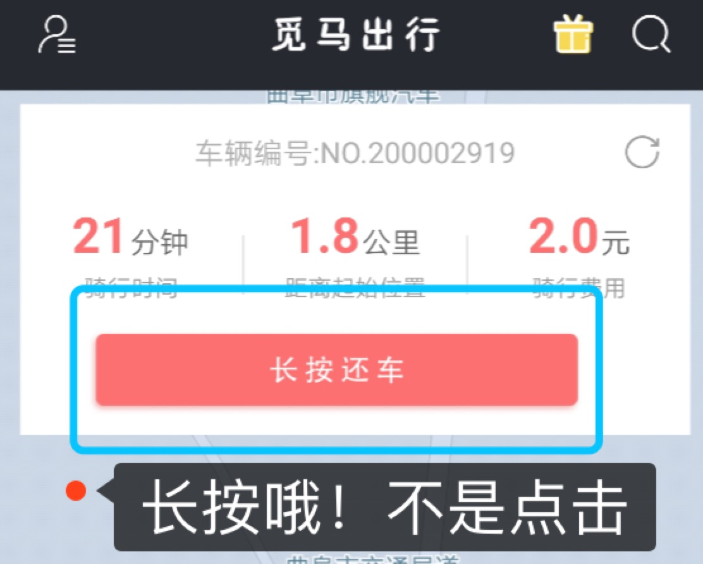

强提示：遵守规范一人一车，禁止两人或多人同乘一辆车，违者后果自负。
温馨提示： 由于赣江源中学附近商铺很多，学生使用量比较大，造成车辆直接停放到路面下面，造成 道路的拥挤，所以公司决定取消赣江源中学附近的停车点。等待公司进一步决定设置停放地点， 如有重要事情需停放此处，还车时请拨打车篮里的服务电话或拨打APP客服中心的电话。
停车规范如下⬇️

觅马共享电动车使用攻略
一：如何临时锁车
扫码开锁后，用车界面底部钥匙图案往左滑临时上锁， 临时上锁期间持续计费哦，按住右滑重新开锁骑行，如下图⬇️：
二：如何还车
按住用车界面“长按还车”三秒后跳转付款界面，点击确认支付后骑行结束，如有骑行券，可以使用骑行券付款。如下图⬇️：
三：指定停车点还车
还车需在指定P点还车，如下图⬇️：
如不在指定停车点还车，APP会有弹框提示，且会收取移车费，如下图⬇️：
注：觅马电动车进入我县，极大的方便了我们的出行和生活，希望大家能够文明用车，安全出行。